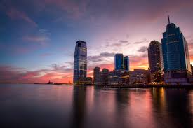

GLOBAL ERA UNFOLDING: HOW RAPID CHANGE, NEW TECHNOLOGIES, AND GEO-POLITICAL SHIFTS ARE RESHAPING THE WORLD
Nations confront a new landscape as cities rise, economies evolve, and the balance of power continues to shift across continents. In an increasingly interconnected world, the pace of global change has accelerated beyond anything seen in the last century. From the skyline expansions in major cities to the quiet but powerful restructuring of international alliances, nations are finding themselves at the intersection of unprecedented opportunity and rising uncertainty. Across Europe, Africa, Asia, and the Americas, world leaders are sounding the same alarm: the global landscape is undergoing a profound transformation that demands renewed focus, cooperation, and innovation. Economists and political analysts agree that the current wave of change—fueled by technological breakthroughs, environmental pressures, economic restructuring, and shifting demographics—will define the trajectory of humanity for decades to come.
Urban centers take the lead: Modern cities are evolving at a record-breaking pace. From developing nations to highly industrialized economies, urban centers have become the beating heart of global growth. New infrastructure, advanced transportation networks, and digital connectivity are reshaping how people live, work, and interact. Cities once known for traditional industries are now becoming hubs for technology, finance, clean energy, and creative innovation. Mega-cities across the world continue to expand both in population and economic capacity, transforming into global players with influence that increasingly rivals that of entire nations. As skyscrapers rise and digital systems become more integrated, city planners emphasize the importance of sustainable development. Investment in green buildings, smart energy systems, and climate-resilient structures is no longer optional—it is a strategic necessity.
Technological advancement: the global accelerator
Artificial intelligence, advanced robotics, biotechnology, and next-generation communication systems are shaping a new era of global competition. Countries are racing to build technological independence while simultaneously leveraging shared innovation on a global scale. Digital economies have grown exponentially. Remote work, virtual collaboration, automation, and massive data processing have transformed industries from healthcare to finance. Nations that once relied heavily on natural resources are now pivoting toward digital infrastructure as the cornerstone of their future economic strength. Experts say the digital divide remains a major challenge. While some countries accelerate toward high-tech dominance, others struggle with basic connectivity. Bridging this gap will determine how inclusive future global growth becomes.Climate change demands global accountability
Climate change remains one of the world’s most pressing threats, with rising temperatures, shifting weather patterns, and environmental degradation putting millions at risk. From coastal cities dealing with sea-level rise to agricultural regions facing disrupted seasons, no country is insulated from the impact. Global institutions are urging nations to honor climate agreements, accelerate renewable energy adoption, and strengthen disaster preparedness. Solar, wind, hydro, and emerging green technologies are seeing large investments as countries seek sustainable alternatives to traditional fossil fuels. Environmental scientists warn that without collective action, climate challenges could trigger deeper economic, social, and political instability. But they also highlight opportunities: countries investing in green innovation today may become leaders in the booming global sustainability economy.
Economic restructuring reshapes global markets
The world economy is in a state of recalibration. Shifts in supply chains, new trade alliances, growth in digital commerce, and rising inflationary pressures are forcing nations to rethink long-term strategies. Emerging markets are gaining new momentum, driven by population growth, technology adoption, and expanding entrepreneurial ecosystems. Meanwhile, traditional economic powerhouses are repositioning themselves in the face of changing consumer habits and global competition.
International relations continue to shift as nations compete for resources, influence, and technological leadership. Strategic partnerships, regional blocs, and new diplomatic agreements are emerging, reflecting a world that is no longer dominated by a handful of superpowers.
Global connectivity deepens cultural exchange: Beyond economics and politics, global citizens are becoming more connected than ever. Cultural exchange, digital communication, global entertainment, and international travel continue to break down barriers between societies.